面向对象设计与构造第三单元第一次作业
JML 系列
题目
分析
在本单元我们的任务为需要完成的任务为通过一个实现简单社交关系的模拟和查询的例子以此达到学习入门级
JML规格理解与代码实现的能力本次作业只需要读懂代码中的
JML表示语言，并且按照其中的要求编写好代码即可，由于客户需求基本都已经表述的很明白了，所以留给你的实现空间挺少的JML表示语言中的伪代码只是给你实现的一种参考，仅仅是规格层次的描述，实际上并不需要严格按照其代码编写，只要你最后的代码能满足条件即可
基本思路
虽然这次的代码框架和方法已经确定，我们只需要完成的任务只是代码填空，但分析清楚代码的功能和实现逻辑还是很有必要的
本次作业为实现简单社交关系的模拟和查询，核心为
MyPerson类，管理此类的数据结构分别为实现了对应接口的MyGroup类以及MyNetWork类，三者狗证了本次作业的基本框架，在这三类中实现了所需功能对应的各种方法本次作业新增了异常处理机制，在
JML表示语言中表明了在方法中处于何种情况下需要抛出哪一种异常，并且实现异常的计数和打印的功能
具体实现
总UML类图：
（可以放大观看）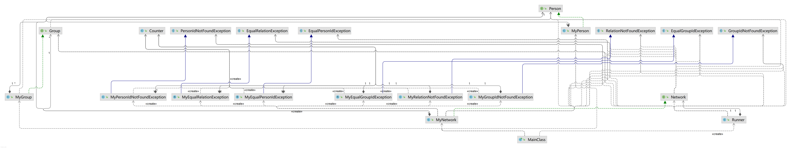
人物接口
Person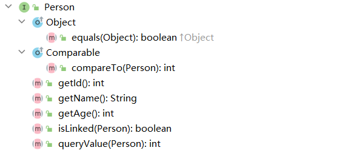
- 重写
equal和compareTo方法 - 编写
id和name和age的Getter方法 isLinked: 查看两人物之间是否存在关系queryValue: 查看两人物之间关系的权重
- 重写
人物类
MyPerson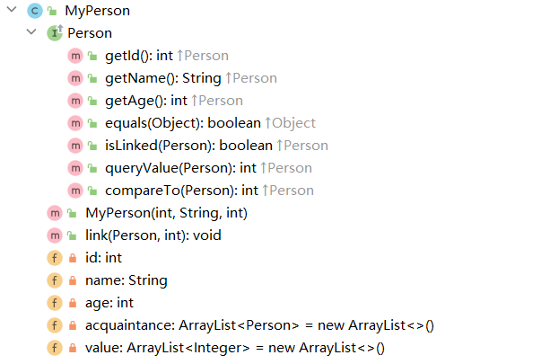
acquaintance: 存储与该人有关系的人value: 存储与人的权重，与acquaintance的下标相对应link: 使两人建立关系的方法
分组接口
Group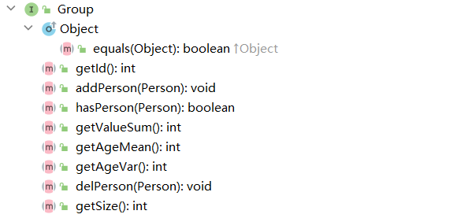
addPerson，delPerson: 对分组中的人的增加与删除hasPerson: 查询此分组是否存在该人getValueSum: 返回与此人有关系所有人的权重的总和getAgeMean，getAgeVar: 获得该分组的所有人年龄的平均值，方差getSize: 获得该分组的大小getId: 获得该分组的id
分组类
MyGroup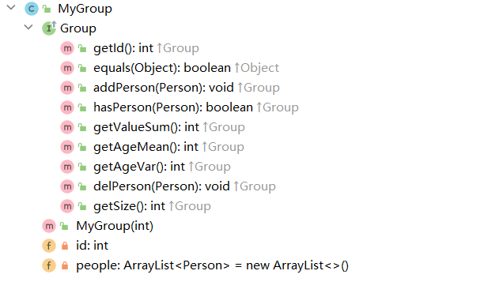
people存储所有该分组中的人
网络接口
Network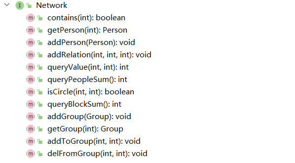
contains: 此网络是否包含此人getPerson: 根据id获取对应的人物addPerson: 向网络中增加人物addRelation: 让两个人产生关系queryValue: 获取两个人之间关系的权重queryPeople: 获取网络中人数的总和isCircle: 判断是否可以通过此网络中的人来使两个人之间‘间接’建立关系queryBlockSum: 获取关系网的数量addGroup: 向网络中增加分组getGroup: 根据id获取对应分组addToGroup: 将人物加入到分组中delFromGroup: 将人物移除出分组
网络类
MyNetwork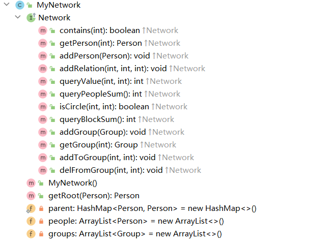
getRoot: 并查集数据结构，获取一个人物的根结点parent: 并查集数据结构，标记一个人物的父结点people: 网络中存储人物groups: 网络中存储分组
人物Id重复抽象类 & 任务Id重复类
PersonIdNotFoundException & MyPersonIdNotFoundException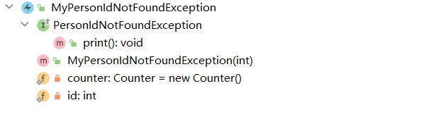
分组Id重复抽象类 & 分组Id重复类
EqualPersonIdException & MyEqualPersonIdException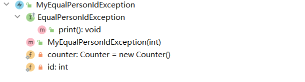
未具有关系抽象类 & 未具有关系类
RelationNotFoundException & MyRelationNotFoundException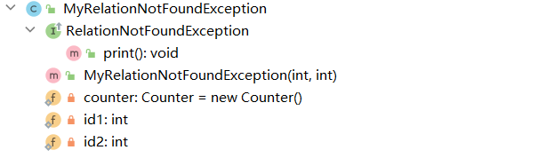
关系已存在抽象类 & 关系已存在类
EqualRelationException & MyEqualRelationException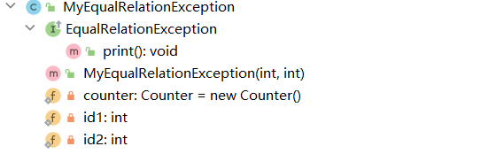
未找到分组Id抽象类 & 未找到分组Id类
GroupIdNotFoundException & MyGroupIdNotFoundException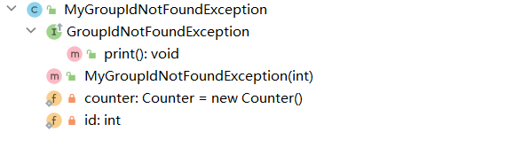
分组Id相同抽象类 & 分组Id相同类
EqualGroupIdException & MyEqualGroupIdException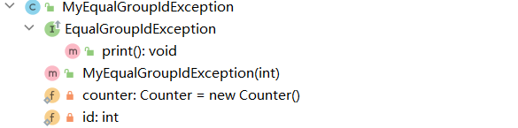
by Tan